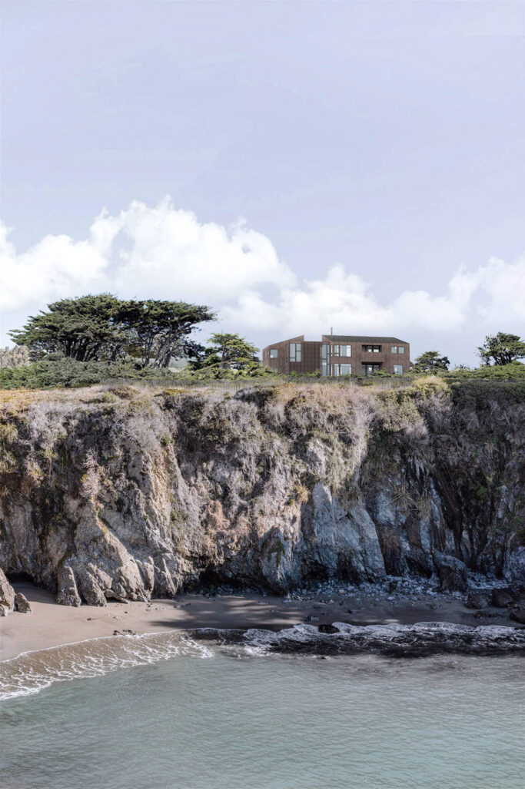

BLUFF HOUSE

Project Team
Dorothy Shepard, Sebastian Mancera, Susan Cook
BLUFF HOUSE
This single family home rests on a dramatic bluff site overlooking the Pacific Ocean. The house features a protected south-facing courtyard to buffer against the strong seasonal winds, while providing ample sunlight and open views of the water to all the living spaces. The stair volume connects the living volumes and is sited to offer ever changing views and perspectives of the water. In the stair, the large landing features a day bed positioned in the open corner, from which to connect with nature.
The simple sloped volumes work in harmony to define the courtyard while serving distinct functions and experiences. The bedrooms are mostly oriented towards the cypress tree on the neighboring lot for privacy, while the living spaces open towards the bluff. The house is all electric, with solar panels and fire resistive building systems. The house will be partially clad in Shou sugi ban panels, which enhances the fire resistance of the structure.
© 2023 BACH ARCHITECTURE. All rights reserved. | 3752 20th Street, San Francisco, CA 94110 | (415) 425-8582 | info@bach-architecture.com